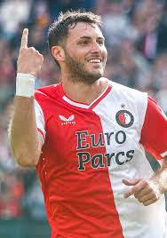

Inicio en Feyenoord
Santiago Giménez llegó al Feyenoord en julio de 2022 proveniente de Cruz Azul. Su fichaje marcó el inicio de su carrera en el fútbol europeo, y rápidamente se adaptó a la Eredivisie con goles y buenas actuaciones.
Retiro del club
Después de una exitosa etapa en el Feyenoord, en 2024 fue transferido al AC Milan, dejando una huella imborrable como uno de los mejores delanteros del club neerlandés en los últimos años.
Estadísticas con Feyenoord
- Partidos jugados: 86
- Goles anotados: 49
- Asistencias: 9
- Dobletes y hat-tricks: múltiples
Logros con el club
- Campeón de la Eredivisie 2022-23, rompiendo una racha de seis años sin título para Feyenoord.
- Máximo goleador del equipo en su primera temporada.
- Reconocido como uno de los mejores fichajes de la liga.
- Participación destacada en competencias europeas como la UEFA Europa League.